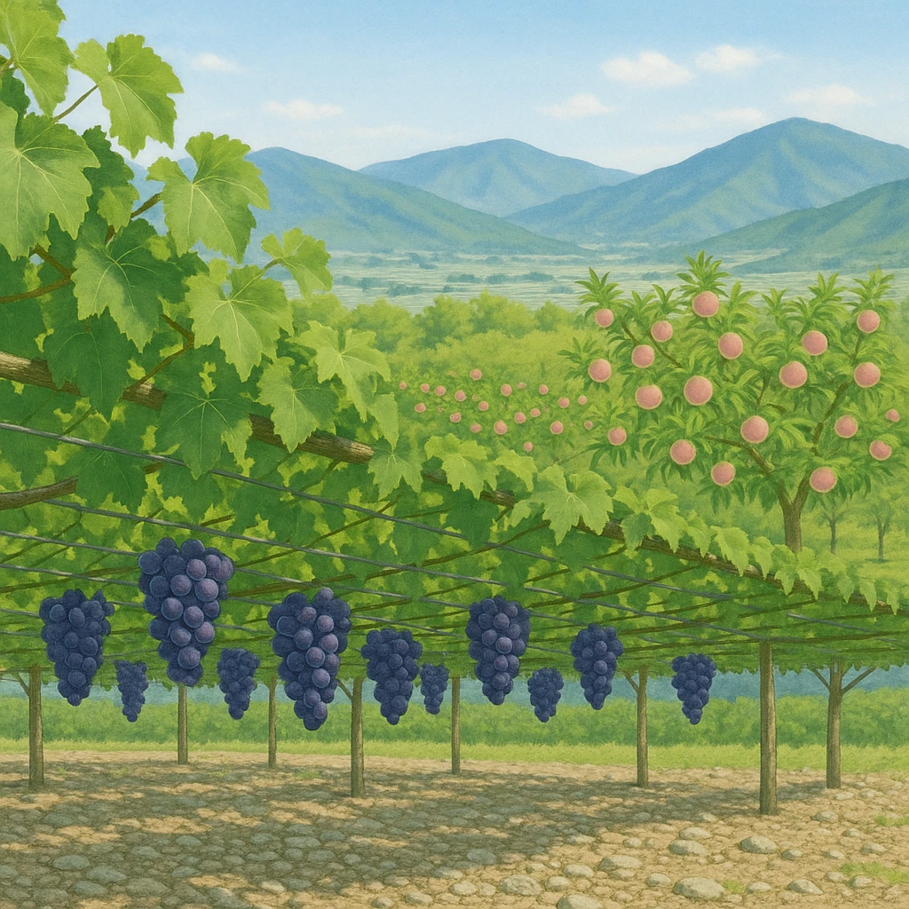

Ⅱ-4
中央高地の農業
甲府盆地は
扇状地
で果樹づくり
甲府盆地
…扇状地で
①
もも
や
②
ぶどう
の栽培が盛ん。
山地
扇状地（水はけがよい）
水はけがよい＝果樹に向く
→
①
・
②
の畑になる
川が山から出る所

①は全国1位
山梨県が
30.5%
で1位。2位は福島県、3位が長野県。
②は全国1位
山梨県が
25.1%
で1位。2位が長野県。ワインづくりも盛ん。
扇状地だから
川が山から出る所にできる
扇状地
は水はけがよい。米には向かないが果樹には最適。
ここが出る
甲府盆地＝扇状地＝①②の果樹＝山梨県が全国1位
。「盆地の名前」まで答えられるように。
第16章 中部地方
SEED EDUCATION